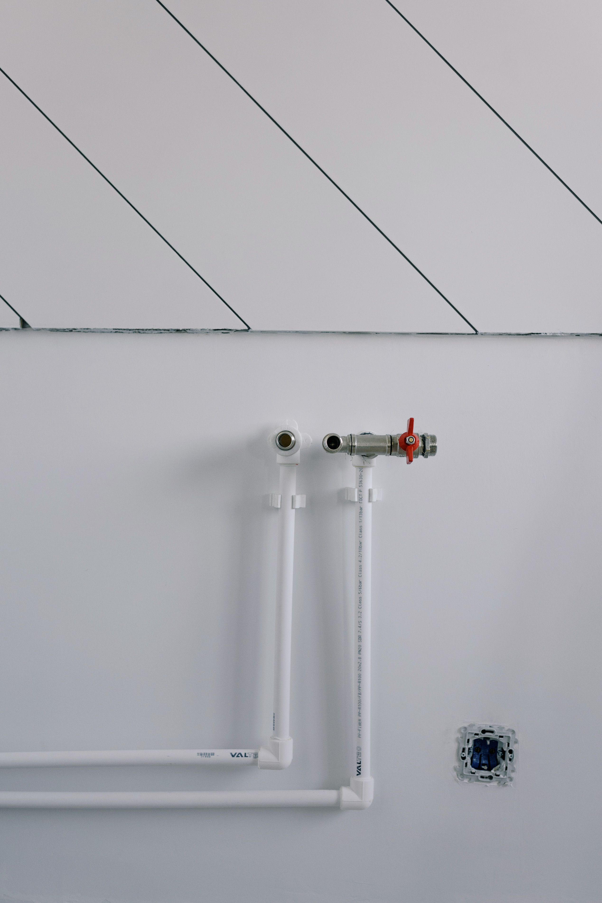
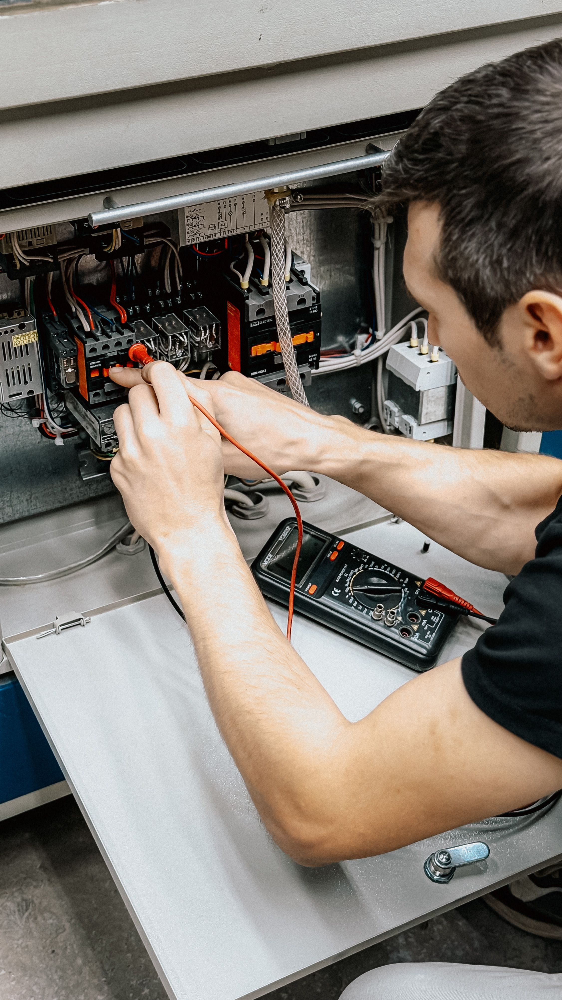
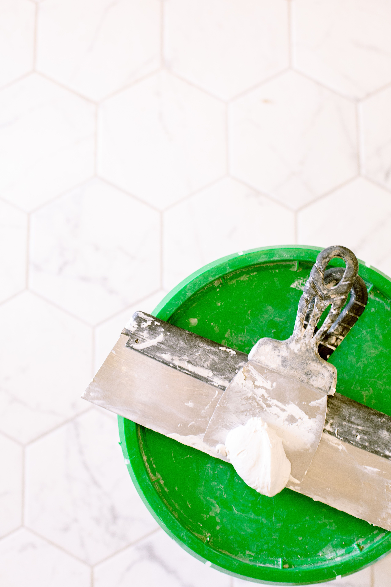
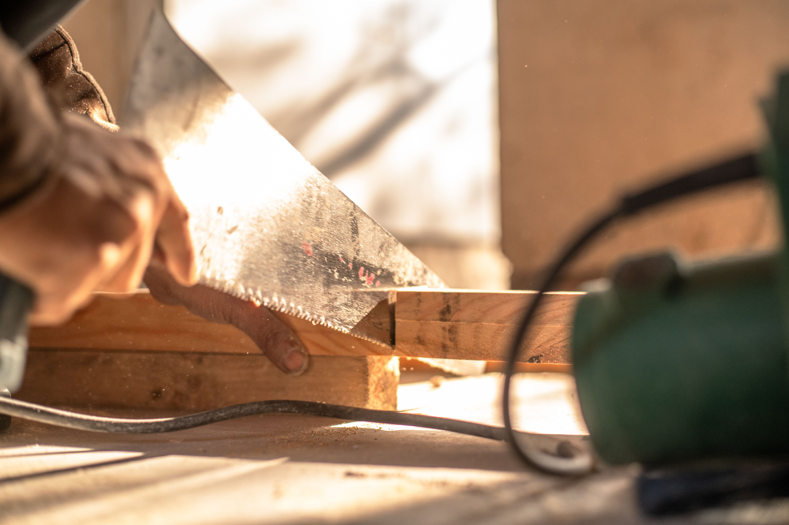
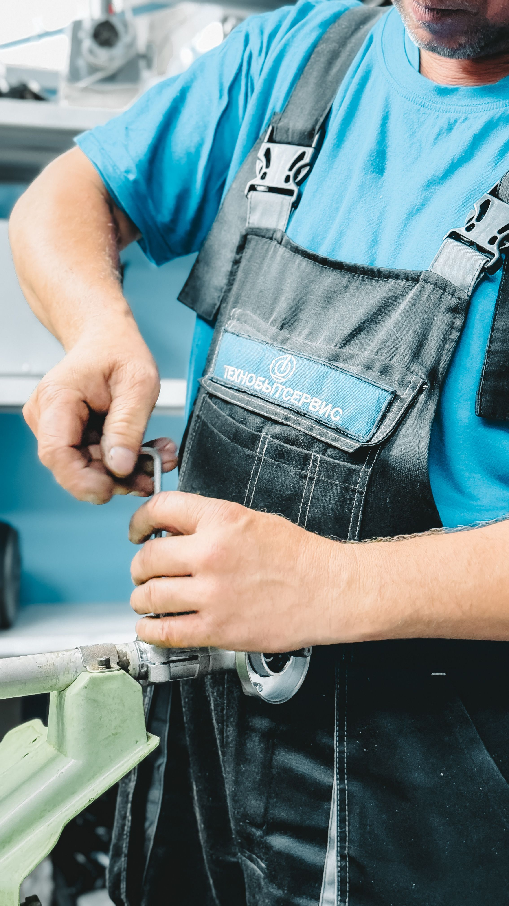

Our Services
FixRight provides a range of home maintenance and improvement services designed to help customers maintain their properties.
Plumbing

Our plumbing service provides assistance with common plumbing maintenance and repair needs, including leaks, blocked drains and pipe-related problems.
- Leak repairs
- Blocked drain assistance
- Pipe maintenance
- General plumbing repairs
Electrical Services

Our electrical service focuses on general electrical maintenance and repair needs. Electrical work should always be completed by appropriately qualified professionals.
- Electrical maintenance
- Fault identification
- Electrical component replacement
- General electrical repairs
Painting
Our painting service helps customers improve and maintain the appearance of their homes through professional preparation and painting.
- Interior painting
- Exterior painting
- Wall preparation
- Repainting
Tiling

TradeConnect provides tiling services for areas such as kitchens, bathrooms, walls and floors.
- Floor tiling
- Wall tiling
- Tile replacement
- Tile repairs
Carpentry

Our carpentry service provides repairs and improvements involving wooden structures and fittings around the home.
- Door repairs
- Shelf installation
- Cupboard repairs
- General woodwork
General Maintenance

General maintenance covers smaller repairs and improvement tasks that help keep a property functional and well maintained.
- Minor repairs
- Property maintenance
- Home improvements
- General repair assistance